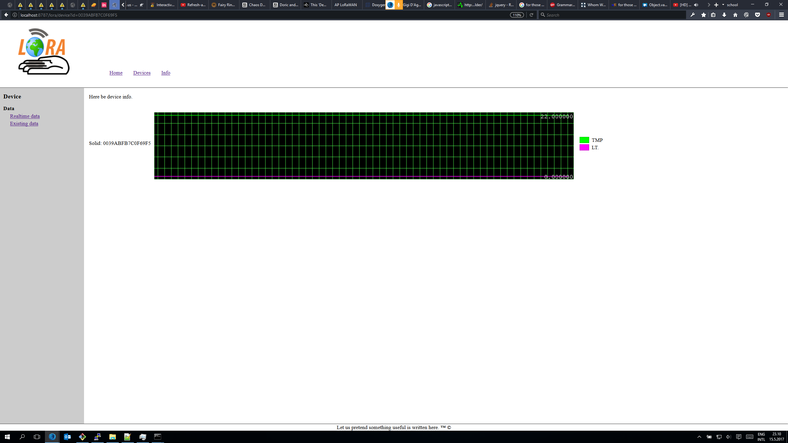
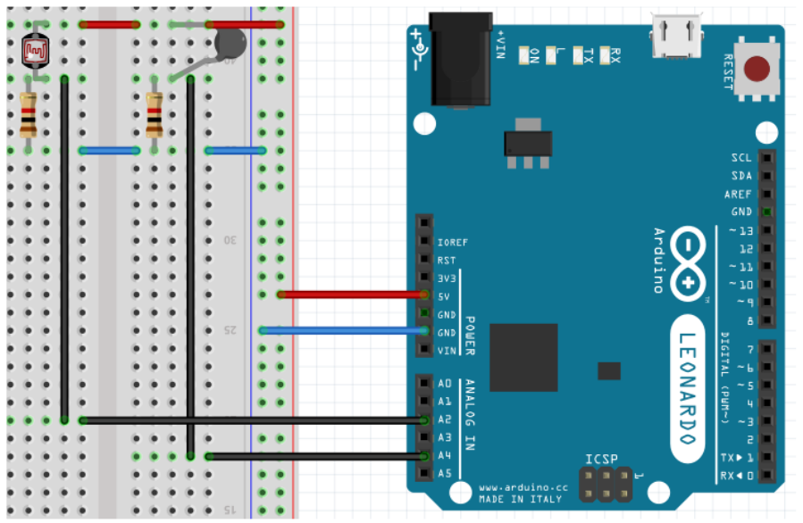
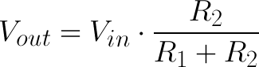

IoT Workshop
Een basis LoRaWAN workshop
Todo:
- Opstelling maken
- Temperatuur meten
- Data versturen over LoRaWAN
- IoT Dashboard opzetten
- Data verzamelen
Opstelling maken

- Arduino Nano
- Spanningsdeler
- RN2483
Temperatuur meten
- Meten m.b.v. een thermistor
- NTC weerstand (Negative Temperature Coefficient)
- Weerstands daalt bij temperatuursstijging
- R @ -10°C ≈ 68kΩ
- R @ 25°C = 10kΩ
- Formule voor te berkenen van temperatuurswaarde
- `T = B / (ln(R_(NTC)/(R_(0)*exp(-B/T_(0)))))`

Temperatuur meten
- Formule voor te berkenen van temperatuurswaarde
- Welke waardes kennen we?
- `B = 4300`
- `R_(0) = 10000`
- `T_(0) = 298.15K` (25°C)
- Wat moeten we nog bepalen
- `R_(NTC) = ?`
- Bepalen mbv spanningsdeler
Temperatuur meten
- Bepalen van weerstandswaarde
- mbv spanningsdeler
- `V_(OUT) = (R2 / (R1 + R2)) * V_(IN) `
- `V_(OUT) = (R_(NTC) / (R_(NTC) + 10K)) * 5V `
- Spanning uitlezen m.b.v. ADC
- `V_(OUT) = ADC * V_(REF) / 1023`
- Als we de twee formules samenvoegen voor het bepalen `R_(NTC)`
- `R_(NTC) = 10k * 1023/(ADC) - 1`

Temperatuur meten
Nu in code
float adc_to_resistance(int adc_pin) {
return (VDIVIDER_R1 / (1023 / (double) analogRead(adc_pin) - 1));
}
float resistance_to_temp(float r){
return NTC_B_VAL / log(r / (VDIVIDER_R1 * exp(-NTC_B_VAL/T0_KELV)));
}
LDR en NTC Data Versturen over LoRaWAN
Infrastructuur

LDR en NTC Data Versturen over LoRaWAN
Infrastructuur
LDR en NTC Data Versturen over LoRaWAN
Infrastructuur
LDR en NTC Data Versturen over LoRaWAN
Infrastructuur

LDR en NTC Data Versturen over LoRaWAN
Schakeling

RN2xx3 -- Arduino
Uart TX -- 10
Uart RX -- 11
MCLR -- 12
Vcc -- 3.3V
Gnd -- Gnd
LDR en NTC Data Versturen over LoRaWAN
Spanningsdeler

LDR en NTC Data Versturen over LoRaWAN
De Code
#include "lorawandemo1.h"
#include <rn2xx3.h>
#include <SoftwareSerial.h>
#include <math.h>
SoftwareSerial mySerial(10, 11); // RX, TX
int ThermistorPin = 2;
int Vo;
float R1 = 1000;
float logR2, R2, T, Tc, Tf;
float c1 = 1.009249522e-03, c2 = 2.378405444e-04, c3 = 2.019202697e-07;
bool light = 1;
int sensor_value;
//create an instance of the rn2xx3 library,
//giving the software serial as port to use
rn2xx3 myLora(mySerial);
// the setup routine runs once when you press reset:
void setup()
{
// Open serial communications and wait for port to open:
Serial.begin(57600); //serial port to computer
mySerial.begin(9600); //serial port to radio
Serial.println("Startup");
initialize_radio();
//transmit a startup message
myLora.tx("TTN Mapper on TTN Enschede node");
delay(2000);
}
void initialize_radio()
{
//reset rn2483
pinMode(12, OUTPUT);
digitalWrite(12, LOW);
delay(500);
digitalWrite(12, HIGH);
delay(100); //wait for the RN2xx3's startup message
mySerial.flush();
//Autobaud the rn2483 module to 9600. The default would otherwise be 57600.
myLora.autobaud();
//check communication with radio
String hweui = myLora.hweui();
while (hweui.length() != 16)
{
Serial.println("Communication with RN2xx3 unsuccessful. Power cycle the board.");
Serial.println(hweui);
delay(10000);
hweui = myLora.hweui();
}
//print out the HWEUI so that we can register it via ttnctl
Serial.println("When using OTAA, register this DevEUI: ");
Serial.println(myLora.hweui());
Serial.println("RN2xx3 firmware version:");
Serial.println(myLora.sysver());
//configure your keys and join the network
Serial.println("Trying to join TTN");
bool join_result = false;
//ABP: initABP(String addr, String AppSKey, String NwkSKey);
join_result = myLora.initABP(devAddr, appSKey, nwkSKey);
while (!join_result)
{
Serial.println("Unable to join. Are your keys correct, and do you have TTN coverage?");
delay(60000); //delay a minute before retry
join_result = myLora.init();
}
Serial.println("Successfully joined TTN");
}
// the loop routine runs over and over again forever:
void loop()
{
measure_Temp();
Serial.println("TXing");
String data_Temp = "|TMP" + String( Tc );
String data_Light = "|LT." + String(light);
myLora.tx( data_Temp + data_Light); //one byte, blocking function
Serial.print(Tc);
Serial.println(" C");
delay(200);
}
void measure_Temp()
{
Vo = analogRead(ThermistorPin);
R2 = R1 * (1023.0 / (float)Vo - 1.0);
logR2 = log(R2);
T = (1.0 / (c1 + c2 * logR2 + c3 * logR2 * logR2 * logR2));
Tc = T - 273.15;
}
LDR en NTC Data Versturen over LoRaWAN
Opzetten variabelen
#include "lorawandemo1.h"
#include <rn2xx3.h>
#include <SoftwareSerial.h>
#include <math.h>
SoftwareSerial mySerial(10, 11); // RX, TX
int ThermistorPin = 2;
int Vo;
float R1 = 1000;
float logR2, R2, T, Tc, Tf;
float c1 = 1.009249522e-03, c2 = 2.378405444e-04, c3 = 2.019202697e-07;
bool light = 1;
int sensor_value;
rn2xx3 myLora(mySerial);
LDR en NTC Data Versturen over LoRaWAN
Algemene Initialisatie
void setup()
{
pinMode(13, OUTPUT);
Serial.begin(57600); //serial port to computer
mySerial.begin(9600); //serial port to radio
Serial.println("Startup");
initialize_radio();
myLora.tx("TTN Mapper on TTN Enschede node");
delay(2000);
}
LDR en NTC Data Versturen over LoRaWAN
Initialisatie Radio Module
pinMode(12, OUTPUT);
digitalWrite(12, LOW);
delay(500);
digitalWrite(12, HIGH);
delay(100); //wait for the RN2xx3's startup message
mySerial.flush();
myLora.autobaud();
String hweui = myLora.hweui();
while (hweui.length() != 16)
{
Serial.println("Communication with RN2xx3 unsuccessful. Power cycle the board.");
Serial.println(hweui);
delay(10000);
hweui = myLora.hweui();
}
Serial.println("When using OTAA, register this DevEUI: ");
Serial.println(myLora.hweui());
Serial.println("RN2xx3 firmware version:");
Serial.println(myLora.sysver());
Serial.println("Trying to join TTN");
bool join_result = false;
join_result = myLora.initABP(devAddr, appSKey, nwkSKey);
while (!join_result)
{
Serial.println("Unable to join. Are your keys correct, and do you have TTN coverage?");
delay(60000); //delay a minute before retry
join_result = myLora.init();
}
Serial.println("Successfully joined TTN");
}
LDR en NTC Data Versturen over LoRaWAN
Main Loop
void loop()
{
measure_Temp();
Serial.println("TXing");
String data_Temp = "|TMP" + String( Tc );
String data_Light = "|LT." + String(light);
myLora.tx( data_Temp + data_Light); //one byte, blocking function
Serial.print(Tc);
Serial.println(" C");
delay(200);
}
LDR en NTC Data Versturen over LoRaWAN
Meten van de temperatuur
void loop()
{
measure_Temp();
Serial.println("TXing");
String data_Temp = "|TMP" + String( Tc );
String data_Light = "|LT." + String(light);
myLora.tx( data_Temp + data_Light); //one byte, blocking function
Serial.print(Tc);
Serial.println(" C");
delay(200);
}
Opdracht
- Maak de opstelling
- Upload de code
- Verstuur de data
Uitbreidingen?
- Meet of dat het licht aan of uit is
- Verstuur de data naar de server